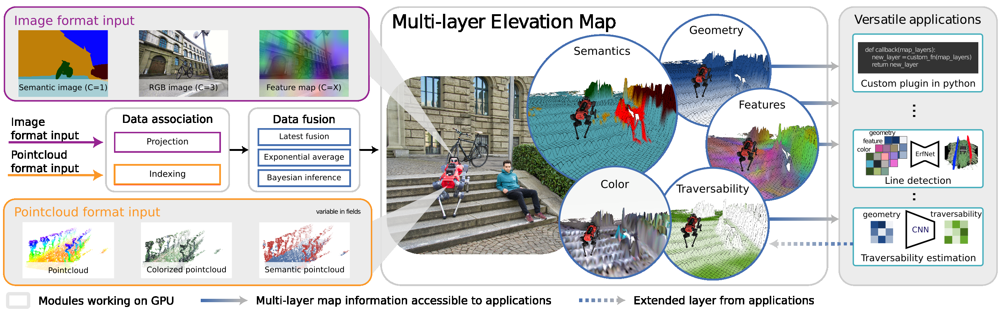

Introduction
elevation_mapping_cupy is a GPU-accelerated elevation mapping stack for ROS2.
It fuses geometry and optional semantic inputs into a grid map that can be
published to planners, visualizers, and downstream perception components.
This documentation describes the official ros2 branch for ROS2 Jazzy.
The main branch remains the legacy ROS1 line.
What This Branch Covers
Core elevation mapping in Python with CuPy-backed map updates.
Pointcloud fusion, image fusion, and plugin-based post-processing.
Semantic fusion through the in-repo
semantic_sensorpackage.TurtleBot3 example launches and integration tests validated on ROS2 Jazzy.
What is not part of the supported ROS2 release surface:
The historical ROS1/catkin workflow.
The legacy plane-segmentation stack.
The experimental
ros2_cppbranch.
Used for Various Real-World Applications
This software package has been used in challenging locomotion and exploration settings, from subterranean navigation to multi-modal terrain perception.
DARPA Subterranean Challenge: This package was used by Team CERBERUS in the DARPA Subterranean Challenge.
CERBERUS in the DARPA Subterranean Challenge (Science Robotics)
ESA / ESRIC Space Resources Challenge: This package was used for the Space Resources Challenge.
Key Features
Height Drift Compensation: Tackles state estimation drifts that can create mapping artifacts, ensuring more accurate terrain representation.
Visibility Cleanup and Artifact Removal: Raycasting methods and an exclusion zone feature are designed to remove virtual artifacts and correctly interpret overhanging obstacles.
Learning-based Traversability Filter: Assesses terrain traversability using local geometry, improving path planning and navigation.
Multi-Modal Elevation Map (MEM) Framework: Allows seamless integration of diverse data like geometry, semantics, and RGB information.
GPU-Enhanced Efficiency: Facilitates rapid processing of large data structures, crucial for real-time applications.
Overview

Overview of the multi-modal elevation map structure. The framework takes multi-modal images and point clouds as input, associates the data with grid cells, fuses each channel into map layers, and optionally runs plugins to derive secondary layers such as traversability or semantic visualizations.
Subscribed Topics
The subscribed topics are configured under the subscribers section of the
robot setup YAML. A reference configuration is available in
elevation_mapping_cupy/config/core/example_setup.yaml.
/<point_cloud_topic> (
sensor_msgs/msg/PointCloud2)The point cloud topic. It can have additional channels for RGB, intensity, and semantic values.
/<image_topic> (
sensor_msgs/msg/Image)The image topic. It can carry RGB, semantic probabilities, or feature images.
/<camera_info> (
sensor_msgs/msg/CameraInfo)Camera intrinsics used to project map updates from image space.
/<channel_info> (
elevation_map_msgs/msg/ChannelInfo)Optional channel metadata used to associate image channels with map layers.
/tf and /tf_static (ROS2 TF topics)
Transform tree used to place sensor observations in the map frame.
Published Topics
Published topics are configured in the publishers section of the robot setup
YAML. Each publisher specifies a topic name, a layer list, a basic_layers
subset for valid-cell handling, and an output rate.
publishers:
your_topic_name:
layers: [ 'list_of_layer_names', 'layer1', 'layer2' ]
basic_layers: [ 'list of basic layers', 'layer1' ]
fps: 5.0
elevation_map_raw (
grid_map_msgs/msg/GridMap)The entire elevation map.
elevation_map_recordable (
grid_map_msgs/msg/GridMap)The entire elevation map with slower update rate for visualization and logging.
elevation_map_filter (
grid_map_msgs/msg/GridMap)The filtered maps using plugins.
Semantics Support
The semantics workflow consists of two stages:
A vision model or semantic sensor node produces semantic channels or feature channels.
elevation_mapping_cupyfuses those channels into map layers according to the configured fusion mode.
This branch includes two supported semantic entry points:
Semantic image fusion through image topics plus
ChannelInfometadata.Semantic pointcloud fusion through multi-channel point clouds generated by
semantic_sensor.